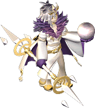

- 盜賊的技能/魔法詳細解說請看這裡
- 可同時使用的技能/魔法及能力提升道具的解說請看這裡
- 延遲0的魔法/技能，使用混合藥水時可以連射。
- 未裝備武器時，攻擊技能的延遲 -1。
攻擊－共通
| 名稱 | 習得條件 | 消耗 | 延遲 | 取得途徑 |
 沙彈 沙彈 | Lv20 | SP:14 | 0 | NPC:魯克西翁神官、 賽可魔瓜、擬態怪、 賽可魔瓜、擬態怪、 神祕拼圖 神祕拼圖 |
| 效果 | [消耗:炸彈]對遠距離的敵人投擲沙炸彈威力:取決於DEX 屬性:土 | |||
| 靈巧手指 | Lv51,FLv70 | SP:130 | 0.6秒 | 凱蒂獵人:狂熱課程、 什麼都有彩券 什麼都有彩券 |
| 效果 | 只限於最後一擊時，可以奪走怪物暗藏的特定道具基本攻擊力:0 | |||
 賭博猛擊 賭博猛擊 | Lv85 | SP:25 | 0.5秒 | NPC:魯克西翁神官、使用:神秘技術傳書、什麼都有彩券 |
| 效果 | 技能等級習得條件:雙重突刺SLv30 [消耗:骰子]消耗1顆骰子，依擲出的點數使出性質不同的攻擊 1.[MISFORTUNE...]:固定傷害1 2.[NORMAL ATTACK]:一般傷害 3.[DIRECT DAMAGE]:固定傷害3333（對人時555） 4.[ATTRIBUTE x2]:屬性效果2倍傷害 5.[INVALID AC]:在敵人AC增加100的狀態下造成一般傷害 6.[ATTACK x3]:一般的3倍傷害基本攻擊力:235(僅部分鞭致命時攻擊力3倍) | |||
| 設置地雷 | Lv85,FLv30 | SP:0 | ? | 死亡艾阿格 |
| 效果 | [消耗:炸彈] 捲軸時的名稱:設置地雷消耗1顆炸彈在地中埋設爆炸物，對踩到的對手造成瀕死的傷害 | |||
| 南瓜炸彈 | Lv85,FLv50 | SP:0 | 0.8秒 | 惡夢中的艾莉絲、隨機彩券 |
| 效果 | [消耗:炸彈]消耗1顆炸彈，將南瓜型炸彈向前方滾動，對周圍的敵人造成傷害威力:取決於DEX | |||
| 迴身 | Lv90 | SP:25 | 0.8秒 | 使用:國王之心 |
| 效果 | 繞到敵人背後，擦身而過時給予一擊基本攻擊力:15 | |||
 旋牙粉碎 旋牙粉碎 | Lv90 | SP:200 | 5秒 | 亞德禮紛、10F迴廊、深淵亞德禮紛聖域、鏡之城2 |
| 效果 | 有可能陷入出血狀態。2連續攻擊，攻擊中可使用其他技能※有一定機率附魔異常狀態:出血(出血：最大HP1％的傷害)效果:8方向2連續攻擊(前方3方向+左右+後方3方向)攻擊威力為前方＜左右＜後方(※由角色朝向與敵人朝向決定)基本攻擊力:495 | |||
攻擊－短劍
| 名稱 | 習得條件 | 消耗 | 延遲 | 取得途徑 |
 刺擊 刺擊 | Lv3 | SP:4 | 0.5秒 | NPC:魯克西翁神官、奇奇、擬態怪 |
| 效果 | 短劍系的基本攻擊(短劍)基本攻擊力:33 | |||
 剜擊 剜擊 | Lv10 | SP:9 | 0 | NPC:魯克西翁神官、 絨毛鼠、擬態怪 絨毛鼠、擬態怪 |
| 效果 | 技能等級習得條件:突刺SLv10刺入後，扭轉短劍以給予追加傷害(短劍)基本攻擊力:60 | |||
| 雙重刺擊 | Lv35 | SP:14 | 0.5秒 | NPC:魯克西翁神官、諾肯雷德、擬態怪 |
| 效果 | 技能等級習得條件:迥旋突刺SLv35以迅速的動作刺2次(短劍)基本攻擊力:95 追加效果:攻擊力下降(DAM-30) | |||
 雙重抓擊 雙重抓擊 | Lv50 | SP:25 | 0.5秒 | NPC:魯克西翁神官、 帽靈、克雷吉、 帽靈、克雷吉、 獨眼怪、萬卷之書 獨眼怪、萬卷之書 |
| 效果 | 技能等級習得條件:迥旋突刺SLv50刺2次之後，再如抓傷般斬擊(短劍)基本攻擊力:135 | |||
| 閃電背刺 | Lv60 | SP:200 | 10秒 |  [馬凱拉][阿納坎] [馬凱拉][阿納坎] |
| 效果 | 只能對目標背後使用，對象處於出血狀態時造成1.5倍傷害基本攻擊力:3500 計數停止:50000 | |||
 亂刺 亂刺 | Lv65 | SP:42 | 0 | NPC:魯克西翁神官、 血櫻蝸牛、斯特帕尼斯、 血櫻蝸牛、斯特帕尼斯、 斯皮羅、 斯皮羅、 千年夜叉、 千年夜叉、 寶箱(金)、擬態怪 寶箱(金)、擬態怪 |
| 效果 | 技能等級習得條件:雙刺抓擊SLv40執拗地不停刺擊對手(短劍)基本攻擊力:190 | |||
| 幻影研磨 | Lv105,FLv75 | SP:90 | 1秒 |  迪奧特、 迪奧特、 暗影幻影 暗影幻影 |
| 效果 | 眨眼之間給予的剎那一擊。有一定機率封鎖魔法詠唱。(短劍)追加效果:幻影詛咒研磨（無法使用魔法）基本攻擊力:585 | |||
攻擊－鞭
| 名稱 | 習得條件 | 消耗 | 延遲 | 取得途徑 |
| 鞭擊 | Lv60 | SP:18 | 0 | 九十之鬼、擬態怪 |
| 效果 | 用鞭子攻擊敵人(鞭)※有標示Lv55,FLv23的，但似乎是從Lv60開始基本攻擊力:115(致命時攻擊力3倍) | |||
| 鐵鞭 | Lv75 | SP:34 | 0 | 九十九之鬼、擬態怪 |
| 效果 | 技能等級習得條件：鞭擊SLv40在鞭子前端裝上鐵塊進行攻擊。致命發生時攻擊力高(鞭)基本攻擊力:180(致命時攻擊力3倍) | |||
 黑玫瑰 黑玫瑰 | Lv80 | SP:36 | 0.8秒 | 死亡冠軍、斯米爾 |
| 效果 | 從鞭子上裝設的尖刺注入猛毒(鞭)2格攻擊 無致命判定追加效果:毒棘(HIT-10,HP-12%/2秒 每CON10減1％)追加效果發生率:取決於DEX | |||
| 暈眩鞭擊 | Lv85 | SP:36 | 0.8秒 | 隨機彩券、死亡凱松 |
| 效果 | 技能等級習得條件：鞭擊SLv30命中時將鞭子纏上，使其麻痺一段時間(鞭)2格攻擊 無致命判定 追加效果:纏繞(暈眩)追加效果發生率:取決於DEX | |||
| 反轉射擊 | Lv89 | SP:36 | 0.8秒 | 隨機彩券、 緋紅摩斯、神秘技術傳授書 緋紅摩斯、神秘技術傳授書 |
| 效果 | 技能等級習得條件：暈眩鞭擊SLv30命中時將鞭子纏上，使對手轉向反方向(鞭)無致命判定反轉成功率:取決於SLV | |||
恢復
| 名稱 | 習得條件 | 消耗 | 延遲 | 取得途徑 |
 自我治癒 自我治癒 | Lv15 | MP:25 | 0 | NPC:魯克西翁神官、擬態怪［絨毛鼠］ |
| 效果 | 少量回復自己的體力 | |||
輔助－戰鬥
| 名稱 | 習得條件 | 消耗 | 延遲 | 取得途徑 |
 毒藥 毒藥 | Lv25 | SP:15 | 0 | NPC:魯克西翁神官、擬態怪 |
| 效果 | 使對象在一段時間內中毒效果:下毒(HIT-10,毒 HP-5%/2秒 每CON10減1%)命中:取決於DEX | |||
 喬克豬肉 喬克豬肉 | Lv40 | SP:10 | 0 | NPC:魯克西翁神官、擬態怪 |
| 效果 | [消耗:炸彈] 投擲煙霧炸彈(黑暗效果)效果:搔癢攻擊(黑暗)命中:取決於DEX | |||
 胡椒炸彈 胡椒炸彈 | Lv40 | SP:10 | 0 | NPC:魯克西翁神官、吉他手之猴、擬態怪 |
| 效果 | [消耗:炸彈] 投擲辣椒炸彈(防禦力下降)效果:胡椒炸彈(AC+30)命中: 50+自己dex-敵人wis=命中率% 持續時間:固定1分鐘 | |||
| 毒素 | Lv50 | SP:42 | 0 | NPC:海盜要塞店、圖尼恰烏、擬態怪、弗薩姆、彩券、神祕拼圖 |
| 效果 | [消耗:炸彈] 投擲毒炸彈(毒效果)效果:毒素炸彈(HIT-30,毒 HP-10%/2秒 每CON10減1％)命中:取決於DEX | |||
| 黑暗迷霧 | Lv75 | SP:?? | ?? | （無法使用）什麼都有彩券 |
| 效果 | 盜賊特殊,在自己周圍產生霧氣，遮蔽敵人視野的技術效果:?? | |||
 蜘蛛網 蜘蛛網 | Lv80,FLv50 | MP:50 | 0.6秒 | 彩券、擬態怪 |
| 效果 | 讓怪物停止移動一段時間效果:蛛網術(無法移動)命中:取決於DEX | |||
| 煙霧彈 | Lv91 | SP:150 | 3.2秒 |  馬凱拉(黃)、馬凱拉(紫)、[馬凱拉]、 馬凱拉(黃)、馬凱拉(紫)、[馬凱拉]、 阿納坎(桃)、[阿納坎] 阿納坎(桃)、[阿納坎] |
| 效果 | [消耗:煙幕彈] 投擲煙幕彈，使其陷入黑暗狀態的咒文時間:0.2秒效果:煙嗆攻擊(黑暗) | |||
| 突然攻擊 | Lv92,FLv20 | SP:150 | 0 |  奴隸長卡爾 奴隸長卡爾 |
| 效果 | 捲軸時的名稱:突襲在透明狀態下偷襲。潑灑毒液使其中毒效果:(毒 HP-3%/1秒 每CON10減1％) | |||
輔助－支援
| 名稱 | 習得條件 | 消耗 | 延遲 | 取得途徑 |
| 迴避 | Lv21 | SP:60 | - | NPC:魯克西翁神官 |
| 效果 | AAR+20,使速度相關魔法無效化效果:自身AAR+20持續時間:取決於INT+Lv 1分30秒(INT+Lv=100) | |||
 風之蜂 風之蜂 | Lv30 | MP:50 | - | NPC:魯克西翁神官、 海盜魚怪、擬態怪 海盜魚怪、擬態怪 |
| 效果 | 借助風的力量，稍微提升移動速度效果:自身移動速度+10%持續時間:取決於INT+Lv 1分30秒(INT+Lv=100) | |||
 魔力恢復術(No.1) 魔力恢復術(No.1) | Lv40 | MP:160 | - | 凱蒂獵人、擬態怪 |
| 效果 | 持續恢復MP效果:每秒恢復對象MP 5持續時間:取決於INT+Lv 45秒(INT+Lv=100) | |||
| 魔力恢復術(No.2) | Lv40 | MP:160 | - | 帕瓦克雷布塔、大塔特勒改、寶箱（淺褐）、擬態怪 |
| 效果 | 持續恢復MP(標示為61)效果:每秒恢復對象MP 5持續時間:取決於INT+Lv 45秒(INT+Lv=100) | |||
 隱形 隱形 | Lv50 | MP:60 | - | 斯皮羅、擬態怪 |
| 效果 | 對怪物與人類隱藏身形效果:隱身(透明)持續時間:取決於INT+Lv 43秒(INT+Lv=100) | |||
| 解脫術 | Lv50 | SP:10 | - | NPC:魯克西翁神官 |
| 效果 | 解除蛛網術 | |||
 布里茲之蜂 布里茲之蜂 | Lv60 | MP:100 | - | 大塔特勒、大塔特勒改、八十六之鬼、寶箱（紅）、 泰茲魔、擬態怪 泰茲魔、擬態怪 |
| 效果 | 借助強風的力量，提升移動速度效果:自身移動速度+25%持續時間:取決於INT+Lv 1分30秒(INT+Lv=100)備註:解除怪物緩慢術 | |||
| 環境術 | Lv65 | MP:15 | - |  奈特梅爾、擬態怪 奈特梅爾、擬態怪 |
| 效果 | 探測透明狀態的對象效果:解除畫面內的透明狀態玩家・敵人 | |||
| 位移 | Lv70 | SP:10 | 0.5秒 | [石蝙蝠](白) |
| 效果 | 配合狀況切換戰鬥風格 持續時間:1小時 轉換類型A:AAR-10,SAR-10,DAM+15 轉換類型B:AC+10,MC+10,AAR+15,SAR+15 轉換類型C:AC-15,MC-15,DAM-10,HIT-10 | |||
| 奈特魔力 | Lv89 | MP:160 | - | 擬態怪 |
| 效果 | 偷取魔法能力給予自己同伴的魔法持續時間:取決於INT+Lv 45秒(INT+Lv=100) | |||
| 大師隱身 | Lv95,FLv31 | MP:130 | - | 艾尼斯泰米、[馬凱拉]、[阿納坎]、擬態怪 |
| 效果 | 長時間隱去身形，以偷襲增大下一次攻擊的威力效果:大師隱身(透明,DAM+50)持續時間:取決於INT+Lv 1分30秒(INT+Lv=100) | |||
| 潛行 | Lv95 | MP:130 | - | 布吉、隨機彩券 |
| 效果 | 以盜賊的祕技讓其他人變透明效果:潛行(透明)持續時間:取決於INT+Lv 58秒(INT+Lv=100) | |||
| 銳利之眼 | Lv100,FLv70 | MP:150 | - | 塞佩利奧2 |
| 效果 | 以鍛鍊出來的動態視力提升命中率。效果:HIT+20 持續時間:取決於INT+Lv 2分(INT+Lv=100) | |||
| 疾風步伐 | Lv110,FLv80 | MP:130 | － | 迪奧特 |
| 效果 | 如疾風般迅速移動。提升移動速度。效果:自身移動速度+30％持續時間:取決於INT+Lv 2分(INT+Lv=100) | |||
| 幻影之影 | Lv115,FLv85 | SP:100 | - | 什麼都有彩券被束縛的靈魂 |
| 效果 | 製造出幾可亂真的幻影，提升迴避率。無法使用速度相關魔法效果:AAR+25 持續時間:取決於INT+Lv 2分(INT+Lv=100) | |||
特殊
| 名稱 | 習得條件 | 消耗 | 延遲 | 取得途徑 |
| 鑑定術(No.1) | Lv3 | SP:5 | 0 |  蒂拉諾 蒂拉諾 |
| 效果 | 鑑定道具的詳細資訊 | |||
| 鑑定術(No.2) | Lv30 | SP:5 | 0 | NPC:魯克西翁神官、擬態怪、 賽帕皮格 賽帕皮格 |
| 效果 | 鑑定道具的詳細資訊 | |||
 屬性確認 屬性確認 | Lv30 | SP:3 | 0 | NPC:魯克西翁神官、寶箱（淺褐）、 安迪爾斯獨眼怪、擬態怪 安迪爾斯獨眼怪、擬態怪 |
| 效果 | 告知目標的屬性 | |||
| 屬性變更 | Lv93 | SP:100 | 0 |  海馬騎士、 海馬騎士、 海馬法師 海馬法師 |
| 效果 | 將對方的防禦屬性變化為自己攻擊屬性的弱點※無法將對方的防禦屬性變更為神聖、暗黑或無屬性※對方的防禦屬性為神聖或暗黑屬性時，也無法變更屬性命中:無依存，固定機率 | |||
| 分身 | Lv120,FLv90 | 無 | 180秒 | 什麼都有彩券、  戴爾 |
| 效果 | 在5格內製造出自己的分身。可使用分身吸引怪物的注意。持續時間:固定58秒 | |||
天上－善屬性
| 名稱 | 習得條件 | 消耗 | 延遲 | 取得途徑 |
| 智慧炸彈 | TLv11 | SP:150,BP:50 | 3.2秒 | 阿米拉姆(黑)、 斯凱米格(黑) 斯凱米格(黑) |
| 效果 | [消耗:智慧炸彈] 對接觸的對象設置定時炸彈60秒後爆炸，被炸到時一段時間內無法恢復HP咒文時間:0.2秒 | |||
| 精巧擊殺 | TLv11 | SP:150 | 0 | 阿米拉姆(黑)、斯凱米格(黑) |
| 效果 | [消耗:智慧工具包] 解除智慧炸彈 | |||
| 毒星鏢 | TLv41 | SP:130,BP:43 | 0 | [火焰鳥]、 岩漿狂徒(紫):歐佩爾7 岩漿狂徒(紫):歐佩爾7 |
| 效果 | 投擲塗有致命劇毒的投擲物的技術。持有流星時會消耗並增加威力。效果:HIT-8,MHIT-8,毒 HP-6%/2秒 每CON20減1％威力:取決於DEX(傷害1000時計數停止)命中:取決於WIS 咒文時間:0.2秒持有流星時:威力增加＆消耗BP 0 | |||
| 神聖毒刺 | TLv51,BLv51 | SP:35,BP:11 | ? | Q:摧毀守衛塔 |
| 效果 | 可對中了吟遊詩人技能「神聖靈魂連結」的對象使用的短劍攻擊技術。有一定機率使對象中毒。 | |||
| 捕捉革新 | TLv71,BLv71 | SP:160,BP:57 | 30秒 | 地獄三頭犬：格亨納6樓監獄、 泥人（紅） 泥人（紅） |
| 效果 | 使對象的行動無力化 | |||
| 致命刺 | TLv91,BLv91 | SP:,BP: | 0.5秒 | 黑暗之翼守護者 |
| 效果 | 對目標施以致命一擊。暫時降低對方能力並造成持續傷害。善惡/信仰等級91以上可使用對攻擊對象附魔「MaxHP/MP/SP -5%、HIT -5%、MHIT -5%、每秒HP -700」基本攻擊力:460 | |||
天上－惡屬性
| 名稱 | 習得條件 | 消耗 | 延遲 | 取得途徑 |
| 固態炸彈 | TLv11 | SP:150,BP:50 | 3.2秒 |  斯泰娜(藍) 斯泰娜(藍) |
| 效果 | [消耗:智慧炸彈] 對接觸的對象設置定時炸彈60秒後爆炸，被炸到時一段時間內無法恢復HP | |||
| 堅實擊殺 | TLv11 | SP:150 | 0 | 斯泰娜(藍) |
| 效果 | [消耗:智慧工具包] 拆除設置好的智慧炸彈 | |||
| 毒鏢 | TLv41 | SP: ,BP: | 0 |  特里奧頓(茶):克修倫4、特里奧頓(紅):克修倫7 特里奧頓(茶):克修倫4、特里奧頓(紅):克修倫7 |
| 效果 | 投擲塗有致命劇毒的投擲物的技術。持有流星時會消耗並增加威力。效果:HIT-8,MHIT-8,毒 HP-6%/2秒 每CON20減1％威力:取決於DEX(傷害1000時計數停止)命中:取決於WIS 咒文時間:0.2秒持有流星時:威力增加＆消耗BP 0 | |||
| 黑暗毒刺 | TLv51,BLv51 | SP:35,BP:11 | ? | Q:露米娜蒙吉的憤怒 |
| 效果 | 可對中了吟遊詩人技能「黑暗靈魂連結」的對象使用的短劍攻擊技術。有一定機率使對象中毒。基本攻擊力:390 | |||
| 捕捉革新 | TLv71,BLv71 | SP:,MP:,BP: | 30秒 | 卡皮歐：露米娜神殿懺悔室4 |
| 效果 | 使對象的行動無力化 | |||
| 致命刺 | TLv91,BLv91 | SP:110,BP:36 | 0.5秒 |  天使之翼守護者 天使之翼守護者 |
| 效果 | 對目標施以致命一擊。暫時降低對方能力並造成持續傷害。善惡/信仰等級91以上可使用對攻擊對象附魔「MaxHP/MP/SP -5%、HIT -5%、MHIT -5%、每秒HP -700」基本攻擊力:460 | |||